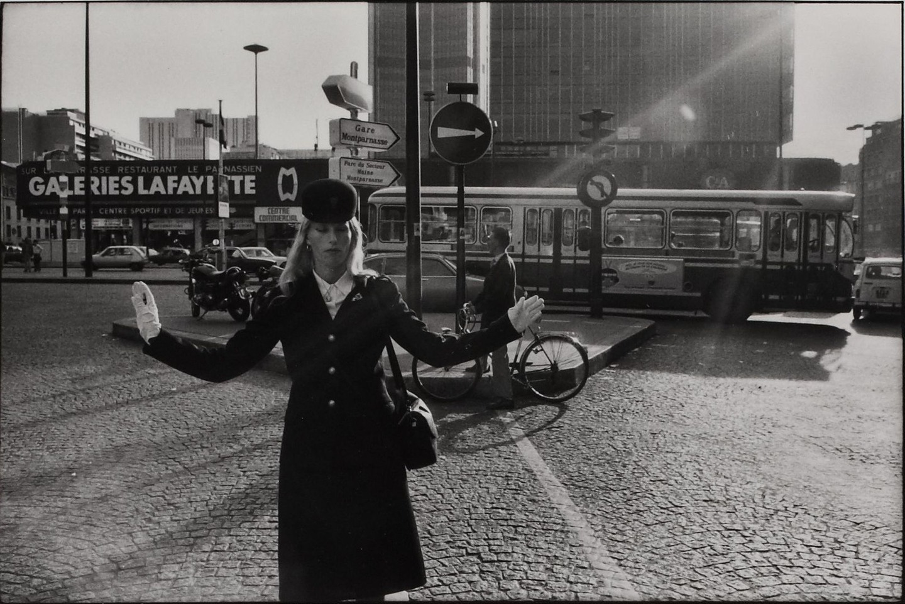
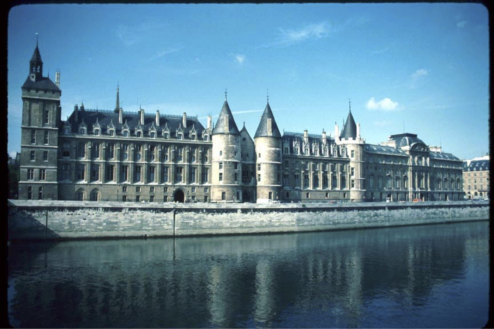
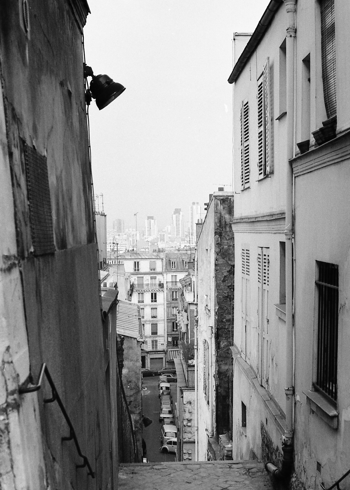

Paris photo sources
Three archival photographs, presented as seven overlapping fragments. This is a curated local selection, not a live search or AI-generated history. The later Paris particle scene is a separate illustrative, image-derived composition—not a 3D reconstruction of these photographs.
Photo dates and authorship below follow the linked records; the negatives have not been independently authenticated. Presentation uses cropping, scaling and perspective arrangement, without colourization or invented detail. No photographer or institution endorses the demo.
Montparnasse, Paris 1980

Pascal Dolémieux · Musée Carnavalet, inventory CP1154 · photographic postcard.
Credit: Pascal Dolémieux / CC0 Paris Musées / Musée Carnavalet – Histoire de Paris. CC0 1.0 dedication.
Institutional record · Original catalogue image

1980 comes from the catalogue title and postcard inscription, not a separately verified capture day. The white postcard margin was cropped at [320,255,2680,1830] in the 3000×2156 original, then resized to 1440×961. Some fragments show additional CSS detail crops of this same photograph.
Conciergerie, Paris, 1980

Johnckarnes, “Conciergerie-Paris-1980.jpg” (1980). Licensed under Creative Commons Attribution-ShareAlike 4.0 International.
Author, source and licence record · Retained original


The author-supplied Commons date is 1980; no month or day is asserted. The original 1400×933 JPEG is unchanged. Display crops, resizing and perspective are authored presentation changes. This photograph and its display crops remain CC BY-SA 4.0; the licence is not replaced by the application's code licence. No endorsement is implied.
Les escaliers de Montmartre, 1980

bigup21, “Les escaliers de montmartre 1980 - panoramio.jpg”. Licensed under Creative Commons Attribution 3.0 Unported.
Source and licence record · Archived Panoramio source · Retained original


1980 is stated in the source description; the later 2008 upload date is not a capture date. The original 1499×2098 JPEG is unchanged. The demo uses responsive detail crops, scaling and perspective arrangement; no retouching or colourization.
Keyboard controls in the demo: Enter submits; Escape pauses; type photos, pause, resume, skip or return. With reduced motion, the photo cluster is static; type continue to reach the static Paris scene. Opening a photo pauses the sequence.